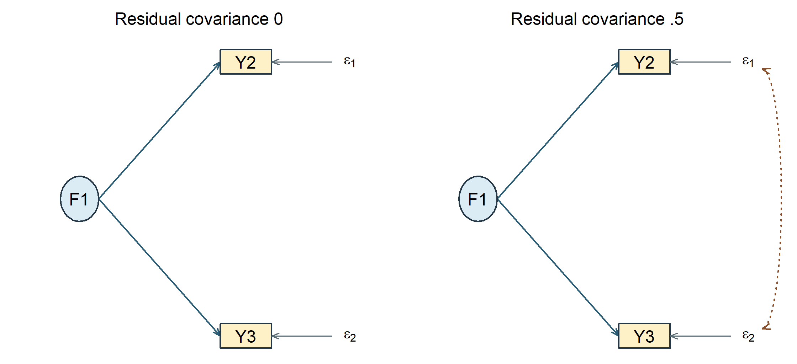
Specifying and Estimating Confirmatory Factor Models
Contents
NoteChapter overview
A confirmatory factor model makes a measurement proposal precise enough to confront observations. This chapter starts with its general equations and a fully disclosed simulated population. We distinguish the population we propose, the sample we observe and the moments a fitted model reproduces. We then write a small model in words, equations, matrices and a diagram; identify free parameters and scale conventions; and ask whether the observed moments can determine those parameters. Estimation supplies coefficients and uncertainty, while global and local evaluation examine the model’s observed implications. A twelve-item learning-experience questionnaire and nine historical ability tests provide two applications. The latter is fitted from both individual records and their summary covariance matrix. By the end, you should be able to explain what was assumed, what was estimated, what the fit evidence says and what remains unestablished. Comparison, revision and independent validation extend this basic analysis in the next chapter.
Suppose a research team argues that several questionnaire responses reflect planning, study strategy and belonging. The claim concerns variables the team cannot observe directly. How does it become a statistical model, and which aspects of it can the recorded responses challenge?
A factor model answers by specifying how the unobserved variables relate to the indicators and what remains outside those relations. It also imposes restrictions: an item may load on one factor but not another; two residuals may be assumed unrelated; two coefficients may be required to agree. These decisions determine both what can be learned from the data and which patterns the model can fail to reproduce. They should therefore be visible before a table of estimates or fit indices appears.
How do a measurement proposal, its statistical restrictions and its observed implications fit together in one defensible analysis?
The examples below keep three kinds of evidence separate. Stipulated population values make an implication exact; a simulated sample shows how sampling changes the observed pattern; empirical records require an account of the actual measurements and design.
1 Formulate a general confirmatory factor model
1.1 The general measurement model
Let \(\mathbf y_i\) contain the \(p\) recorded indicators for person \(i\), and let \(\boldsymbol\eta_i\) contain \(m\) factors. A linear measurement model is
\[ \mathbf y_i=\boldsymbol\nu+\boldsymbol\Lambda\boldsymbol\eta_i +\boldsymbol\epsilon_i. \]
The intercept vector \(\boldsymbol\nu\) sets indicator origins. Each row of the \(p\times m\) loading matrix \(\boldsymbol\Lambda\) describes one indicator’s relations with the factors. The residual vector \(\boldsymbol\epsilon_i\) contains influences left outside those relations. We assume \(E(\boldsymbol\epsilon_i)=\mathbf0\) and \(\operatorname{Cov}(\boldsymbol\eta_i,\boldsymbol\epsilon_i)=\mathbf0\). Writing \(E(\boldsymbol\eta_i)=\boldsymbol\alpha\), \(\boldsymbol\Phi=\operatorname{Var}(\boldsymbol\eta_i)\) and \(\boldsymbol\Theta=\operatorname{Var}(\boldsymbol\epsilon_i)\) gives
\[ \boldsymbol\mu=\boldsymbol\nu+\boldsymbol\Lambda\boldsymbol\alpha, \qquad \boldsymbol\Sigma(\boldsymbol\vartheta) =\boldsymbol\Lambda\boldsymbol\Phi\boldsymbol\Lambda^{\mathsf T} +\boldsymbol\Theta. \]
Here \(\boldsymbol\Phi\) is \(m\times m\) and \(\boldsymbol\Theta\) is \(p\times p\). The free-parameter vector \(\boldsymbol\vartheta\) collects the entries we estimate under the restrictions; it is distinct from the residual covariance matrix \(\boldsymbol\Theta\). The equations separate the proposed common sources of association from residual association. Their covariance implication requires finite second moments and the stated uncorrelatedness assumption; a Normal sampling distribution is an additional assumption used later for conventional likelihood inference.
To read the equation as a conditional mean, assume additionally that \(E(\boldsymbol\epsilon_i\mid\boldsymbol\eta_i)=\mathbf0\). Then \(\boldsymbol\nu\) gives expected indicator levels at zero factor values and the loadings describe their linear change as factors vary. Joint Normality with zero factor–residual covariance supplies this conditional-mean property.
In a path diagram, ellipses denote factors, rectangles denote recorded indicators, directed arrows denote loadings, and curved double-headed arrows denote covariances. A loading arrow represents a conditional linear relation: it does not by itself establish a causal measurement process. A diagram also needs a parameter ledger. An arrow may have a free coefficient, a value fixed to set units, or a value constrained to equal another coefficient; an absent arrow commonly denotes a fixed zero.
The confirmatory specification declares these restrictions before the analysis being evaluated. It might assign each indicator to one factor, allow a prespecified secondary loading, constrain selected loadings to equality, or allow a justified residual covariance. Those restrictions, rather than the name of a fitting routine, give the model its testable implications.
| Question | Exploratory factor model | Confirmatory factor model |
|---|---|---|
| Which loadings are estimated? | All, before choosing an orientation | Only the declared free relations |
| How is orientation handled? | Rotation and subsequent labels | Loading restrictions and factor metrics |
| What determines the candidate? | Development evidence plus content | A fixed specification, with named rivals |
| What data role is being used? | Records used to develop the specification | Records used to evaluate an already declared specification |
| What is not established by the model label? | Unique substantive interpretation | Adequacy, validity, or causality |
“Confirmatory” describes restrictions and analytic history, not a guaranteed favorable conclusion. A CFA estimated after repeated same-data changes is still mathematically a CFA, but the changed specification is data-developed. Conversely, a prespecified cross-loading does not make a model nonconfirmatory merely because it departs from independent-clusters simple structure.
1.2 Missing arrows have statistical consequences
An absent loading arrow generally means a coefficient fixed to zero. It does not mean that the indicator and factor are uncorrelated. Under correlated factors, an indicator can correlate with a factor on which it has no direct loading. For example, if \(Y_2=.8\eta_1+\epsilon_2\) and the factors correlate, \(Y_2\) can covary with \(\eta_2\) even though its loading on \(\eta_2\) is zero.
An absent residual covariance means that two residuals are uncorrelated under the model. That is a moment restriction. To assert conditional independence of indicators given the factors, we additionally need an appropriate conditional distribution or factorization; in a jointly normal linear model, diagonal residual covariance supplies that stronger property. Zero covariance alone does not generally imply independence.
A factor-to-indicator arrow specifies a loading relation. Interpreting the arrow causally requires design and substantive assumptions beyond the covariance equation. Good fit cannot supply temporal precedence or exclude every alternative explanation.
Consider two indicators with loadings .8 and 1.2 on a factor of variance 4, and residual variances 3 and 4. Their common-factor covariance is \(.8(1.2)(4)=3.84\). Now suppose the two questions share wording whose influence remains after holding the factor fixed. Represent that possibility by a residual covariance of .5, leaving every other parameter unchanged.
NotePredict and explain
Before inspecting the second case, predict whether the marginal indicator covariance, the covariance conditional on the true factor, or both will change. Would the absence of a residual arrow mean that the two recorded indicators are independent without conditioning?
| Quantity for \(Y_2,Y_3\) | Residual covariance 0 | Residual covariance .5 |
|---|---|---|
| Marginal covariance | 3.84 | 4.340 |
| Covariance conditional on the true factor | 0.00 | .500 |
| Residual correlation | 0.00 | .144 |
The residual correlation is \(.5/\sqrt{3(4)}=.144\). In the jointly Normal model, the first case gives local independence conditional on the true factor. The indicators remain marginally associated because they share that factor. The second case retains an additional conditional association. Shared wording is one possible design explanation; the covariance alone cannot establish it. Conditioning on estimated factor scores is also a different operation: predictions of the factor are not the true factor values being held fixed in this calculation.
1.3 From a known population to one simulated sample
A small known population lets us see the model-to-data link before fitting a substantive example. Introduce two zero-mean factors, measured by six indicators. Their generating loadings, factor covariance and residual variances are
\[ \boldsymbol\Lambda_0= \begin{bmatrix}1.00&0.00\\.80&0.00\\1.20&.25\\0.00&1.00\\0.00&1.10\\0.00&.90\end{bmatrix}, \quad \boldsymbol\Phi_0=\begin{bmatrix}4&1.2\\1.2&9\end{bmatrix}, \quad \boldsymbol\Theta_0=\operatorname{diag}(2,3,4,3,4,5). \]
The indicator intercepts are \((10,12,11,15,14,13)\). Factors are jointly Normal; residuals are mutually independent Normal variables and independent of the factors. Each simulated person is independent of the others. The extra .25 loading allows \(Y_3\) to reflect both factors. These are declared population values, not estimates selected because they fit a sample well.
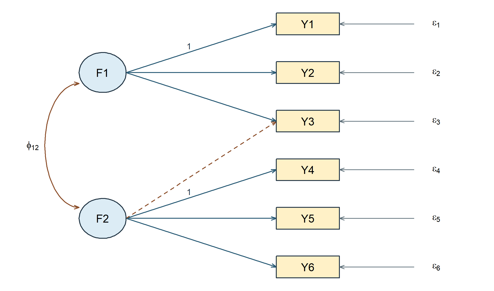
When this structure is fitted, the two marker loadings stay fixed at one. The other displayed nonzero values become quantities to estimate. Treating every generating number as fixed would instead test a much narrower model.
| Parameter family | Free covariance-model parameters |
|---|---|
| Nonmarker loadings, including \(Y_3\)’s second loading | 5 |
| Two factor variances and their covariance | 3 |
| Indicator residual variances | 6 |
| Total | 14 |
Six variances and fifteen distinct covariances supply \(6(7)/2=21\) distinct moments, leaving \(21-14=7\) degrees of freedom. These 21 moments are summaries of a distribution, not 21 people. Counting is a necessary check; Section 6 explains why it does not alone establish identification.
| Y1 | Y2 | Y3 | Y4 | Y5 | Y6 | |
|---|---|---|---|---|---|---|
| Y1 | 6.00 | 3.200 | 5.100 | 1.20 | 1.320 | 1.080 |
| Y2 | 3.20 | 5.560 | 4.080 | 0.96 | 1.056 | 0.864 |
| Y3 | 5.10 | 4.080 | 11.043 | 3.69 | 4.059 | 3.321 |
| Y4 | 1.20 | 0.960 | 3.690 | 12.00 | 9.900 | 8.100 |
| Y5 | 1.32 | 1.056 | 4.059 | 9.90 | 14.890 | 8.910 |
| Y6 | 1.08 | 0.864 | 3.321 | 8.10 | 8.910 | 12.290 |
We generate 500 independent records from these declarations, using seed 20260930 with the Mersenne-Twister generator, Normal inversion and the stated indicator order. The values and seed are held fixed. The resulting sample is separate from the later learning-experience samples; knowing this population supplies no advance knowledge about that other case.
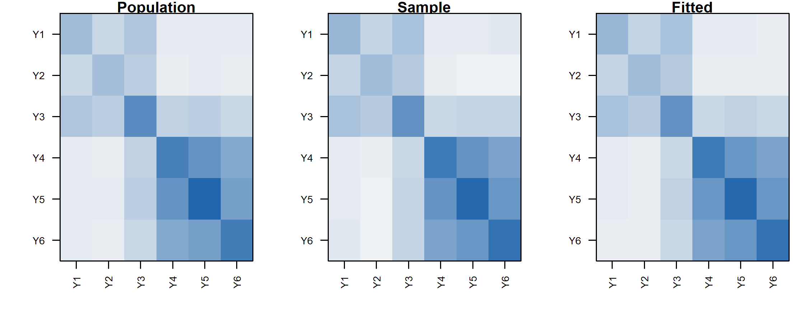
| Entry | Population | Sample | Fitted |
|---|---|---|---|
| Y2, Y3 | 4.080 | 4.471 | 4.494 |
| Y3, Y5 | 4.059 | 3.518 | 3.710 |
| Y3 variance | 11.043 | 10.415 | 10.415 |
| Y1, Y6 | 1.080 | 1.342 | 1.026 |
The population and sample panels answer different questions. The first is what the declared model generates on average; the second is what these 500 people happened to produce. Estimation selects one member of the restricted model family, shown in the third panel. Even a correctly specified model need not reproduce the sample matrix exactly or recover each generating parameter exactly. We return to that distinction after developing estimation. For exact arithmetic in Sections 2–5, a simpler controlled population sets the extra loading to zero; it is explicitly distinguished from this sampled population.
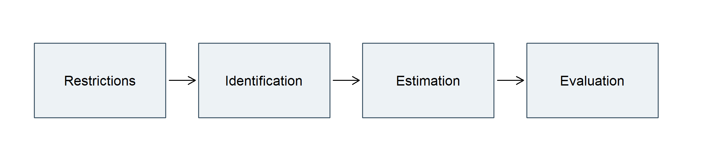
2 Write one model four ways
2.1 A verbal specification
Begin with six continuous indicators, \(Y_1,\ldots,Y_6\), and two correlated factors. The first three indicators load only on \(\eta_1\); the last three load only on \(\eta_2\). All six residual variances are free and all residual covariances are zero. Factors and residuals are uncorrelated. Use \(Y_1\) and \(Y_4\) as markers, fixing their loadings to one. The factor variances and their covariance remain free.
The labels are intentionally neutral. This compact model is adapted from a two-factor, six-indicator teaching structure, not extracted from the SLE items. It lets us follow each restriction without introducing a second substantive measurement story.
2.2 Six scalar equations
With zero latent intercepts and zero-mean residuals,
\[ \begin{aligned} Y_{i1}&=\nu_1+\eta_{i1}+\epsilon_{i1},& Y_{i4}&=\nu_4+\eta_{i2}+\epsilon_{i4},\\ Y_{i2}&=\nu_2+\lambda_{21}\eta_{i1}+\epsilon_{i2},& Y_{i5}&=\nu_5+\lambda_{52}\eta_{i2}+\epsilon_{i5},\\ Y_{i3}&=\nu_3+\lambda_{31}\eta_{i1}+\epsilon_{i3},& Y_{i6}&=\nu_6+\lambda_{62}\eta_{i2}+\epsilon_{i6}. \end{aligned} \]
The subscript \(i\) denotes a person; the first subscript of \(\lambda_{ja}\) identifies the indicator, and the second identifies the factor. Writing all six equations is useful once: it prevents a compact diagram from hiding a cross-loading or a mistaken marker. Later, matrix notation avoids repeating the same structure.
2.3 Three parameter matrices
The same model is
\[ \boldsymbol\Lambda= \begin{bmatrix} 1&0\\\lambda_{21}&0\\\lambda_{31}&0\\ 0&1\\0&\lambda_{52}\\0&\lambda_{62} \end{bmatrix},\qquad \boldsymbol\Phi=\begin{bmatrix}\phi_{11}&\phi_{12}\\ \phi_{12}&\phi_{22}\end{bmatrix},\qquad \boldsymbol\Theta=\operatorname{diag}(\theta_{11},\ldots,\theta_{66}). \]
There are twelve loading slots, not twelve freely estimated loadings: four are free, two are fixed at one for scaling, and six are fixed at zero. Symmetry means \(\phi_{12}\) and \(\phi_{21}\) are the same covariance, not two independent parameters. Likewise, a freely estimated residual covariance would occupy two symmetric matrix entries but add only one free parameter.
The implied mean vector is \(\boldsymbol\mu=\boldsymbol\nu+\boldsymbol\Lambda\boldsymbol\alpha\). Here \(\boldsymbol\alpha=\mathbf0\), so \(\boldsymbol\mu=\boldsymbol\nu\). The latent intercept equals the latent mean because this CFA has no structural paths or latent predictors. This convention will need an explicit distinction between intercepts and marginal means once structural regressions enter.
2.4 A diagram and the free parameters it implies
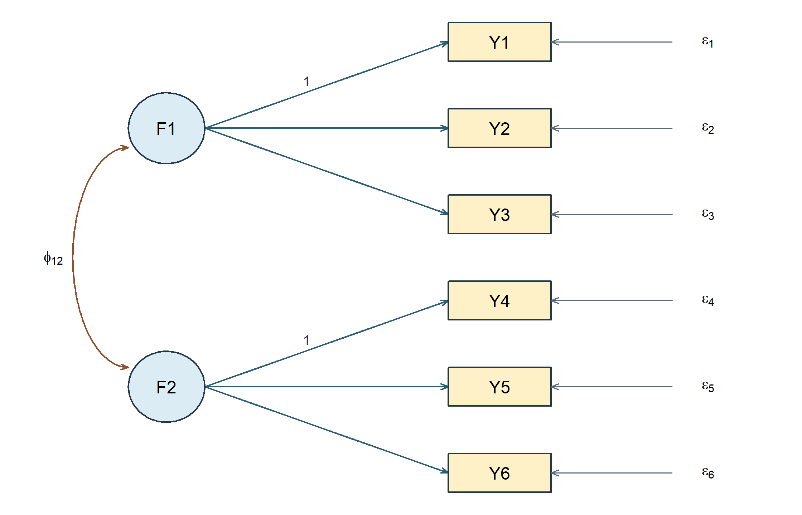
The diagram and matrices together determine a free parameter vector. Under the stated marker constraints it is
\[ \boldsymbol\vartheta=(\lambda_{21},\lambda_{31},\lambda_{52},\lambda_{62},\; \phi_{11},\phi_{12},\phi_{22},\; \theta_{11},\theta_{22},\theta_{33},\theta_{44},\theta_{55}, \theta_{66})^{\mathsf T}. \]
That is thirteen entries. Everything else in the three matrices is fixed: \(\lambda_{11}=\lambda_{42}=1\), the six remaining loadings at zero, and \(\theta_{jk}=0\) for \(j\neq k\). Section 6.2 counts the same thirteen against the twenty-one available moments.
A convenience fitting function supplies free indicator residual variances and fixes unmentioned residual covariances to zero in this model. Defaults must still be checked; a short specification is not a complete parameter ledger. The official CFA tutorial is a useful orientation to the specify–fit–extract workflow.
| Representation | What to check |
|---|---|
| Words | Indicator assignments, residual assumptions, metric, and means |
| Scalar equations | Every indicator has exactly the stated loading terms |
| Matrices | All zero, fixed, and shared entries are explicit |
| Diagram and syntax | Every drawn or coded relation matches the same ledger |
If two representations disagree, no amount of numerical convergence can resolve which model the researcher intended. Fix the specification before interpreting output.
2.5 Transfer the grammar to four factors
A larger diagram should be read with the same ledger rather than as a new kind of model. As a published-reading exercise, reconstruct the topology of Figure 3 in Chou & Chou (2021, p. 6): four correlated factors—self-efficacy, school support, privacy concerns, and technostress—each measured by four indicators. The reconstruction below records the displayed assignments and factor relations; it does not reproduce the paper’s estimated coefficients or imply that every software default used in the original analysis is known.
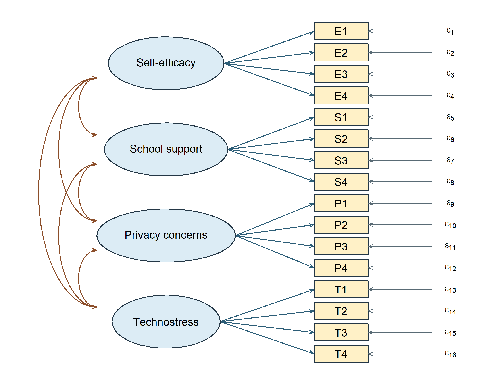
Under fixed-factor scaling the reconstruction has parameter matrices
\[ \boldsymbol\Lambda= \begin{bmatrix} \boldsymbol\lambda_1&\mathbf 0&\mathbf 0&\mathbf 0\\ \mathbf 0&\boldsymbol\lambda_2&\mathbf 0&\mathbf 0\\ \mathbf 0&\mathbf 0&\boldsymbol\lambda_3&\mathbf 0\\ \mathbf 0&\mathbf 0&\mathbf 0&\boldsymbol\lambda_4 \end{bmatrix}, \qquad \boldsymbol\Phi= \begin{bmatrix} 1&\phi_{12}&\phi_{13}&\phi_{14}\\ \phi_{12}&1&\phi_{23}&\phi_{24}\\ \phi_{13}&\phi_{23}&1&\phi_{34}\\ \phi_{14}&\phi_{24}&\phi_{34}&1 \end{bmatrix}, \]
with \(\boldsymbol\Lambda\) of order \(16\times4\), each \(\boldsymbol\lambda_g\) a \(4\times1\) vector of free loadings, each \(\mathbf 0\) a \(4\times1\) vector of fixed zeros, and \(\boldsymbol\Theta\) diagonal of order sixteen. The omitted loading arrows are those fixed zeros, the four unit latent variances set the factor metrics, and the six pairwise factor covariances, here correlations, are free. With 16 continuous indicators, the covariance ledger is therefore
\[ u=\frac{16(17)}2=136,\qquad t=16\text{ loadings}+16\text{ residual variances} +\frac{4(3)}2\text{ factor correlations}=38, \qquad df=98. \]
This transfer matters because visual density can conceal a counting error. Four double-headed arrows would omit two factor correlations; counting 16 drawn loading slots as 16 free loadings would be wrong under marker scaling but correct under the fixed-factor convention used here. Always state the metric before reading freedom from a diagram.
3 Free, fixed, and constrained parameters
3.1 Different restrictions do different jobs
A free parameter is estimated from the data under the other restrictions. A fixed parameter is assigned a known constant. An equality constraint requires two or more parameter entries to share a value; it does not necessarily assign that value in advance. A bound restricts the allowable range. A defined parameter is a computed function of fitted parameters and does not add a new free parameter.
| Entry | Status | Statistical role | Reason to state |
|---|---|---|---|
| \(\lambda_{11}=1\) | Fixed | Factor metric | Marker choice |
| \(\lambda_{21}\) | Free | Target loading | Indicator assignment |
| \(\lambda_{22}=0\) | Fixed | Excluded secondary loading | Content/design restriction |
| \(\lambda_{21}=\lambda_{31}\) | Equality | Shared loading value | Equality on a stated scale |
| \(\theta_{23}=0\) | Fixed | Residual relation excluded | Local measurement assumption |
| \(\phi_{12}\) | Free | Factor association | Correlation permitted |
| \(\theta_{jj}>0\) | Admissibility condition | Positive residual variance | Statistical parameter space |
| \(\lambda_{21}-\lambda_{31}\) | Defined | Loading difference | Derived estimand, not extra freedom |
Fixing one loading to one selects a unit. Fixing a secondary loading to zero excludes a relation. They are both constants in software, but only the latter ordinarily adds a substantive covariance restriction when the former replaces another valid scale normalization.
“Unconstrained” is also relative. A free loading is estimated within a model whose other loadings, residual structure, and factor variances may be strongly restricted. Its estimate is not model-free evidence about that indicator.
3.2 Change one loading restriction
Allow \(Y_3\) to load on factor 2 as well:
\[ Y_{i3}=\nu_3+\lambda_{31}\eta_{i1} +\lambda_{32}\eta_{i2}+\epsilon_{i3}. \]
One formerly zero matrix entry becomes free. The new coefficient affects the variance of \(Y_3\) and its covariances with all indicators connected to either factor. It does not merely repair the covariance of one chosen pair. The coefficient’s interpretation is conditional on factor 1, just as an oblique EFA pattern coefficient was conditional on the other factors.
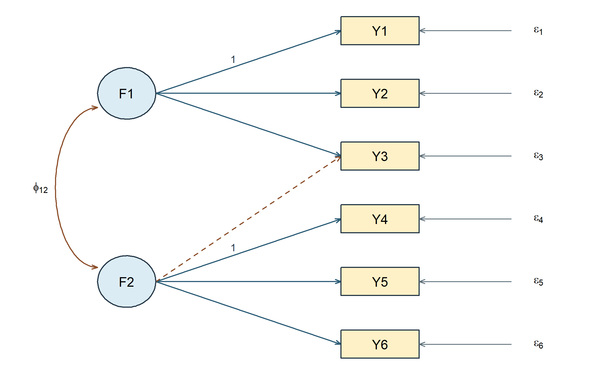
3.3 Change one residual relation instead
Alternatively, retain the original loading matrix but free \(\theta_{23}=\operatorname{Cov}(\epsilon_2,\epsilon_3)\). Then only the \((2,3)\) and \((3,2)\) entries of the residual matrix change. This can represent item-specific shared wording, a common task, or another source of association outside the two modeled factors. Its meaning must be justified; “the software suggested it” is not a measurement explanation.
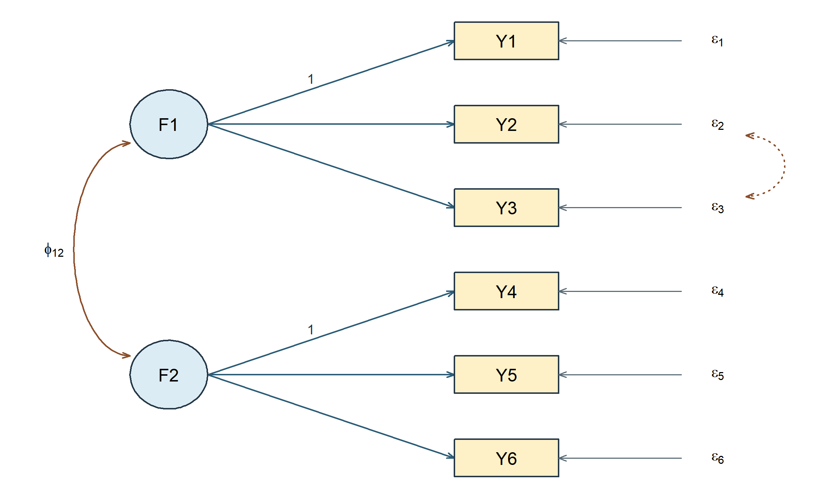
Both changes add one parameter, but they generally produce different sets of implied covariance matrices. Equal df therefore does not imply equivalent models. When two modifications improve the same observed pair, their consequences for the other pairs help distinguish them. Local diagnosis depends on that difference.
3.4 Equality requires a common metric
The restriction \(\lambda_{21}=\lambda_{31}\) states equal raw changes in \(Y_2\) and \(Y_3\) for a one-unit change in their common factor. If \(Y_3\) is rescaled from points to tens of points, the equivalent restriction must be transformed. Repeating the old equality on rescaled data tests a different hypothesis.
Equality of loadings is not equality of residual variances, intercepts, or item distributions. Equal loadings with unequal residual variances allow different precision. Stronger parallel-measurement conditions require additional restrictions. A short-form scale cannot be justified simply by retaining the largest estimated loadings; content coverage and intended score use also change when items are removed.
4 Give latent variables a metric
A change of factor units, a change of indicator units, and a new substantive restriction do different work. Factor rescaling preserves the implied covariance in the original observed units. Indicator rescaling expresses the same information in new observed units, with every affected model quantity transformed. A substantive restriction instead excludes covariance patterns that were previously allowed. The examples below keep those changes apart.
4.1 Marker scaling and fixed-factor scaling
Latent variables have no observed unit until we assign one. Under marker scaling, \(\lambda_{11}=1\) means that a one-unit change in \(\eta_1\) contributes one unit to \(Y_1\) through its loading relation. It does not set the factor variance to one or make the marker error-free.
Under fixed-factor scaling, set \(\phi_{11}=\phi_{22}=1\) and estimate all six target loadings. A factor unit is then one model-standard-deviation unit in this single-group CFA. The indicators retain their raw units. In lavaan, std.lv=TRUE requests this scale choice. It is not a command to standardize every observed column.
| Quantity | Marker scaling | Fixed-factor scaling |
|---|---|---|
| Marker loadings | Fixed at one | Free |
| Factor variances | Free | Fixed at one |
| Free target loadings | 4 | 6 |
| Free factor variance/covariance entries | 3 | 1 |
| Free residual variances | 6 | 6 |
| Total free covariance axes | 13 | 13 |
One must also choose factor signs. With unit factor variances, changing the sign of a factor and every loading on it leaves the covariance unchanged. A declared positive orientation for central indicators makes reported signs interpretable; a negative factor does not represent a different fit merely because its column points the other way.
4.2 Derive the reparameterization
For an invertible diagonal \(m\times m\) matrix \(\mathbf D\), define
\[ \boldsymbol\eta_i^*=\mathbf D\boldsymbol\eta_i, \qquad \boldsymbol\Lambda^*=\boldsymbol\Lambda\mathbf D^{-1}, \qquad \boldsymbol\Phi^*=\mathbf D\boldsymbol\Phi\mathbf D^{\mathsf T}. \]
The implied covariance is unchanged:
\[ \boldsymbol\Lambda^*\boldsymbol\Phi^* (\boldsymbol\Lambda^*)^{\mathsf T} =\boldsymbol\Lambda\boldsymbol\Phi\boldsymbol\Lambda^{\mathsf T}. \]
For positive factor variances, choosing \(\mathbf D=\operatorname{diag}(\phi_{11}^{-1/2},\phi_{22}^{-1/2})\) makes the transformed factor variances one. The residual matrix is unchanged. If latent means are modeled, transform \(\boldsymbol\alpha^*=\mathbf D\boldsymbol\alpha\) as well.
Use the following controlled values for hand calculation:
\[ \boldsymbol\Lambda= \begin{bmatrix}1&0\\.8&0\\1.2&0\\0&1\\0&1.1\\0&.9\end{bmatrix}, \quad \boldsymbol\Phi=\begin{bmatrix}4&1.2\\1.2&9\end{bmatrix}, \quad \boldsymbol\Theta=\operatorname{diag}(2,3,4,3,4,5). \]
The transformation divides factor 1 by 2 and factor 2 by 3. Accordingly, the transformed loading columns multiply by 2 and 3. The covariance 1.2 becomes a correlation \(1.2/(2\times3)=.2\). The transformed primary loading of \(Y_2\) is 1.6, but its implied variance has not changed.
| Item | Marker loading | Fixed factor loading | Residual variance | Implied variance |
|---|---|---|---|---|
| Y1 | 1.0 | 2.0 | 2 | 6.00 |
| Y2 | 0.8 | 1.6 | 3 | 5.56 |
| Y3 | 1.2 | 2.4 | 4 | 9.76 |
| Y4 | 1.0 | 3.0 | 3 | 12.00 |
| Y5 | 1.1 | 3.3 | 4 | 14.89 |
| Y6 | 0.9 | 2.7 | 5 | 12.29 |
This is a reparameterization of the same covariance model, not evidence that marker and fixed-factor methods estimate different constructs. Equivalence can fail if a constraint is not transformed with the metric, if a required marker loading is zero, or if a factor variance is on an inadmissible boundary. Multigroup means and nonlinear models need additional care. A convenient single-group result should not be generalized without checking those conditions.
4.3 Changing observed units is a different operation
Latent rescaling leaves the observed variables untouched. Changing an indicator from raw points to tens of points changes the numerical record itself. Let
\[ \mathbf y_i^*=\mathbf b+\boldsymbol\Delta\mathbf y_i, \]
where \(\boldsymbol\Delta\) is a nonsingular diagonal matrix of observed-unit conversion factors. The matching model is
\[ \begin{aligned} \boldsymbol\nu^*&=\mathbf b+\boldsymbol\Delta\boldsymbol\nu, &\boldsymbol\Lambda^*&=\boldsymbol\Delta\boldsymbol\Lambda,\\ \boldsymbol\Theta^*&=\boldsymbol\Delta\boldsymbol\Theta \boldsymbol\Delta^{\mathsf T}, &\boldsymbol\Sigma^*&=\boldsymbol\Delta\boldsymbol\Sigma \boldsymbol\Delta^{\mathsf T}. \end{aligned} \tag{1}\]
Thus multiplying one indicator by 10 multiplies its intercept and loading by 10, its variance and residual variance by 100, and its covariance with an unchanged indicator by 10. A fixed shift changes its intercept and mean but not its covariance. Nothing is unidentified in this operation: the same observed information is expressed in different units, and every affected model quantity must change coherently.
Let \(\mathbf D_y=\operatorname{diag}(\boldsymbol\Sigma)\) contain the positive observed variances. The corresponding correlation model is
\[ \begin{aligned} \mathbf R &=\mathbf D_y^{-1/2}\boldsymbol\Sigma\mathbf D_y^{-1/2}\\ &=\widetilde{\boldsymbol\Lambda}\boldsymbol\Phi \widetilde{\boldsymbol\Lambda}^{\mathsf T} +\widetilde{\boldsymbol\Theta}, \end{aligned} \tag{2}\]
where \(\widetilde{\boldsymbol\Lambda}=\mathbf D_y^{-1/2} \boldsymbol\Lambda\) and \(\widetilde{\boldsymbol\Theta}= \mathbf D_y^{-1/2}\boldsymbol\Theta\mathbf D_y^{-1/2}\). This standardizes the indicators, not the factors. With continuous ML and a consistently transformed model, observed-unit rescaling does not change fit. Repeating an untransformed numerical equality constraint after changing units, however, tests a different model.
4.4 Three kinds of coefficient output
For a loading \(\lambda_{ja}\), latent-standardized and fully standardized versions are, respectively,
\[ \lambda_{ja}^{(\mathrm{lv})} =\lambda_{ja}\sqrt{\phi_{aa}}, \qquad \lambda_{ja}^{(\mathrm{all})} =\lambda_{ja}\frac{\sqrt{\phi_{aa}}}{\sqrt{\sigma_{jj}}}. \]
The first expresses a factor change in standard-deviation units while retaining the indicator’s raw unit. The second standardizes both. In our fixed-factor CFA, raw and latent-standardized loadings coincide, but fully standardized loadings generally differ.
Standardizing output after fitting does not impose equal indicator variances during estimation. Moreover, the uncertainty of a standardized coefficient depends on the estimated quantities used in the transformation. Dividing a raw standard error by a displayed rounded standard deviation is not generally the correct standard error for the fully standardized coefficient.
A loading greater than one in raw units is unremarkable. Even a standardized pattern coefficient needs to be interpreted in its multivariate context; admissibility concerns the full covariance decomposition. For a single-loading item with uncorrelated residuals, the squared fully standardized loading is its communality. For a cross-loading item, use the full quadratic form, not a single square.
The canonical analysis fits raw observations and then reports standardized coefficients. A correlation matrix removes the original indicator units; covariance-model standard errors computed from that input are not automatically standard errors of fully standardized parameters, whose transformation uses estimated variances. For a CFA whose restrictions are invariant to rescaling, the fit statistic can nevertheless stay the same. Unit-dependent equality restrictions, the covariance divisor, and the likelihood convention need their own checks. Section 6.2 distinguishes the information counts, and Section 7.3 states the divisor convention.
5 Trace restrictions into implied moments
5.1 Within-factor and between-factor covariance
From the controlled marker-scaled model,
\[ \begin{aligned} \operatorname{Var}(Y_2)&=\lambda_{21}^2\phi_{11}+\theta_{22},\\ \operatorname{Cov}(Y_2,Y_3)&=\lambda_{21}\lambda_{31}\phi_{11},\\ \operatorname{Cov}(Y_2,Y_5)&=\lambda_{21}\lambda_{52}\phi_{12},\\ \operatorname{Cov}(Y_5,Y_6)&=\lambda_{52}\lambda_{62}\phi_{22}. \end{aligned} \]
The numerical values are \(5.560\), \(3.840\), \(1.056\), and \(8.910\). Each expression has a reason. \(Y_2\)’s variance contains common and residual variance. \(Y_2\) and \(Y_3\) share factor 1. \(Y_2\) and \(Y_5\) are connected through the factor covariance. There is no residual cross-term because the base residual matrix is diagonal.
The diagonal and off-diagonal equations do different work during estimation. The covariances inform relations among loadings and factor covariances; the variances also constrain residual variances. An implausibly large common part may force a residual variance toward zero or below it. A Heywood case is therefore a symptom of the whole decomposition, not a harmless cosmetic warning.
| Indicator | Y1 | Y2 | Y3 | Y4 | Y5 | Y6 |
|---|---|---|---|---|---|---|
| Y1 | 6.000 | 3.200 | 4.800 | 1.200 | 1.320 | 1.080 |
| Y2 | 3.200 | 5.560 | 3.840 | 0.960 | 1.056 | 0.864 |
| Y3 | 4.800 | 3.840 | 9.760 | 1.440 | 1.584 | 1.296 |
| Y4 | 1.200 | 0.960 | 1.440 | 12.000 | 9.900 | 8.100 |
| Y5 | 1.320 | 1.056 | 1.584 | 9.900 | 14.890 | 8.910 |
| Y6 | 1.080 | 0.864 | 1.296 | 8.100 | 8.910 | 12.290 |
Every entry of that table comes from the same assembly, and the four expressions above are four of its entries:
\[ \boldsymbol\Sigma(\boldsymbol\vartheta) =\boldsymbol\Lambda\boldsymbol\Phi\boldsymbol\Lambda^{\mathsf T} +\boldsymbol\Theta, \qquad \mathbf R=\mathbf D_y^{-1/2}\boldsymbol\Sigma\mathbf D_y^{-1/2}. \]
The second expression, in the \(\mathbf D_y\) notation of Section 4.3, changes covariance units to correlations; it does not re-estimate the model. In a fitted model, compare the implied covariance to the sample covariance using matching divisors and variable order. Rescaling the fitted matrix to correlations makes the same implications readable without the original units.
5.2 What the cross-loading adds
Now add \(\lambda_{32}\) to the third indicator’s row. Its variance is
\[ \sigma_{33}=\lambda_{31}^2\phi_{11} +\lambda_{32}^2\phi_{22} +2\lambda_{31}\lambda_{32}\phi_{12}+\theta_{33}. \]
The covariances with \(Y_2\) and \(Y_5\) become
\[ \begin{aligned} \sigma_{23}&=\lambda_{21} (\lambda_{31}\phi_{11}+\lambda_{32}\phi_{12}),\\ \sigma_{35}&=\lambda_{52} (\lambda_{31}\phi_{12}+\lambda_{32}\phi_{22}). \end{aligned} \]
If \(\lambda_{32}=.25\) while the other controlled parameters stay fixed, \(\sigma_{23}\) increases by \(.8\times.25\times1.2=.240\), whereas \(\sigma_{35}\) increases by \(1.1\times.25\times9=2.475\). The unequal changes follow from the pathways and factor variances, not a software accident.
The 500-record simulation introduced in Section 1.3 includes this \(.25\) secondary loading. The base model here holds it at zero to isolate the consequence of removing one relation. Fitting the complete generating specification later allows us to compare estimates with known truth. This six-indicator example remains separate from the twelve-indicator questionnaire.
5.3 What a residual covariance adds
Instead, in the base model, adding \(\theta_{23}=.5\) changes \(\sigma_{23}\) from 3.84 to 4.34 and leaves all other unique covariance entries unchanged when the remaining parameters are held fixed. This contrasts sharply with the cross-loading’s multi-pair changes.
After refitting, other estimates will generally change too. The controlled comparison holds them fixed only to expose the direct algebraic consequences of the specification. Do not confuse that hand calculation with the total change after an optimizer re-estimates every free parameter.
5.4 Means are a separate set of moments
In covariance-only analysis there are \(p(p+1)/2\) observed moments. Adding a mean structure adds \(p\) more:
\[ u_{\mathrm{cov}}=\frac{p(p+1)}2, \qquad u_{\mathrm{mean+cov}}=\frac{p(p+1)}2+p. \]
If all indicator intercepts are free and latent intercepts are fixed to zero, the extra \(p\) mean moments are matched by \(p\) extra parameters. The covariance restrictions and df are unchanged. This is different from testing structured mean differences or constraining intercepts across groups, topics that will become important later.
Freeing every indicator intercept and every latent intercept at once does not identify a latent origin. For any vector \(\mathbf c\),
\[ \boldsymbol\alpha^*=\boldsymbol\alpha+\mathbf c, \qquad \boldsymbol\nu^*=\boldsymbol\nu-\boldsymbol\Lambda\mathbf c \]
produce the same observed means. Location restrictions are needed in addition to scale restrictions. Fixing factor variances to one does not remove this location ambiguity.
6 Can the parameters be recovered?
6.1 Identification is about the parameter-to-moment mapping
Identification is a property of the mapping from parameters to moments, and it has to be established for each specification rather than assumed; Bollen (1989) develops the general treatment and Jöreskog (1969) the confirmatory factor case. After accounting for scale and sign conventions, global identification requires that
\[ \boldsymbol\Sigma(\boldsymbol\vartheta_1) =\boldsymbol\Sigma(\boldsymbol\vartheta_2) \quad\Longrightarrow\quad \boldsymbol\vartheta_1=\boldsymbol\vartheta_2 \]
for admissible parameter vectors in the declared model. Local identification requires uniqueness in a neighborhood. Generic identification permits exceptional parameter sets, such as special zero loadings, where recoverability fails. For models with means, replace the covariance mapping by the joint mean-and-covariance mapping.
Identification is not the existence of an exact solution to every sample covariance matrix. An identified overrestricted model usually cannot reproduce arbitrary sample moments exactly; estimation finds the closest admissible representation under a stated discrepancy. Conversely, multiple parameter vectors can reproduce the same moments even if an optimizer prints only one of them.
6.2 Count moments and free parameters
Counting begins by choosing one coherent moment representation. For \(p\) continuous indicators, a covariance matrix supplies \(p(p+1)/2\) distinct variances and covariances. A correlation matrix supplies only \(p(p-1)/2\) freely varying off-diagonal entries because its \(p\) diagonal entries equal one. Adding an unrestricted observed mean vector contributes another \(p\) moments.
For six indicators this gives
| Moment representation | Distinct information |
|---|---|
| Covariances, including variances | \(6(7)/2=21\) |
| Correlations, with unit diagonals fixed | \(6(5)/2=15\) |
| Covariances plus observed means | \(21+6=27\) |
In covariance form, the fixed-factor two-factor simple-structure model has six loadings, one factor correlation, and six residual variances: \(t=13\) and \(df=21-13=8\). That is the count previewed in Chapter 1, Section 5.3, completed here in both moment representations rather than restated. In correlation form, the six unit-diagonal equations determine the six residual variances, leaving seven free parameters and the same \(df=15-7=8\). Subtracting all 13 covariance-model parameters from 15 correlations would count standardization twice.
For the marker-scaled six-indicator base model,
\[ u=\frac{6(7)}2=21,\qquad t=4+3+6=13,\qquad df=21-13=8. \]
Adding one cross-loading yields \(t=14\), \(df=7\). Adding one residual covariance instead gives the same count but a different model. Adding both gives \(t=15\), \(df=6\). A single independent equality constraint on two otherwise free loadings reduces the free-axis count by one. Merely giving a free parameter a label does not change the count.
| Six-indicator specification | Loading axes | Factor covariance axes | Residual axes | Candidate df |
|---|---|---|---|---|
| Marker-scaled base | 4 | 3 | 6 | 8 |
| Fixed-factor base | 6 | 1 | 6 | 8 |
| Base plus one cross-loading | 5 | 3 | 6 | 7 |
| Base plus one residual covariance | 4 | 3 | 7 | 7 |
| Base with one loading equality | 3 | 3 | 6 | 9 |
The count \(df=u-t\) is necessary bookkeeping, not sufficient proof. The term “observed moments” is preferable to “number of observations” here: 21 unique covariance entries are not 21 people. Increasing the sample size improves precision under suitable conditions but does not create new types of covariance moments or repair structural nonidentification.
The same bookkeeping clarifies why a displayed unrestricted EFA loading matrix contains more entries than the model has distinguishable parameters. With six indicators and two unit-variance orthogonal factors, there are 12 raw loading entries and six residual variances. A two-factor orthogonal rotation has \(2(2-1)/2=1\) continuous degree of freedom and changes the loading display without changing its reproduced covariance. The generic dimension is
\[ t_{\mathrm{EFA}}=12+6-\frac{2(2-1)}2=17, \qquad df=21-17=4. \tag{3}\]
This subtraction counts distinct covariance-model axes at regular, full-rank parameter points. It does not declare any substantively preferred loading to be known, and it does not replace an identification analysis.
For the twelve-indicator SLE family, \(78/(27+k)/(51-k)\) summarizes moments, free parameters and degrees of freedom when \(k\) secondary loadings are free. It applies to twelve active indicators, three correlated unit-variance factors, diagonal residual covariance and no equality restriction. Removing an indicator changes the available moments; freeing a residual covariance changes another parameter block; an equality removes a free coordinate. Each needs its own ledger rather than an adjustment to \(k\).
The task here is to trace a specification into its count and read what an identification diagnostic adds. It does not require deriving an information matrix, proving global identification with a Jacobian, or implementing an optimizer.
6.3 A recoverable block and a counterexample
For a single marker-scaled factor with three indicators and diagonal residuals,
\[ \sigma_{12}=\lambda_2\phi, \quad \sigma_{13}=\lambda_3\phi, \quad \sigma_{23}=\lambda_2\lambda_3\phi. \]
When the relevant covariances are nonzero, these imply
\[ \phi=\frac{\sigma_{12}\sigma_{13}}{\sigma_{23}}, \quad \lambda_2=\frac{\sigma_{23}}{\sigma_{13}}, \quad \lambda_3=\frac{\sigma_{23}}{\sigma_{12}}. \]
The diagonal equations then determine residual variances. These expressions explain generic recoverability for this simple block, subject to admissibility. If a denominator vanishes, the reasoning must be revisited; a generic result does not cover every exceptional configuration.
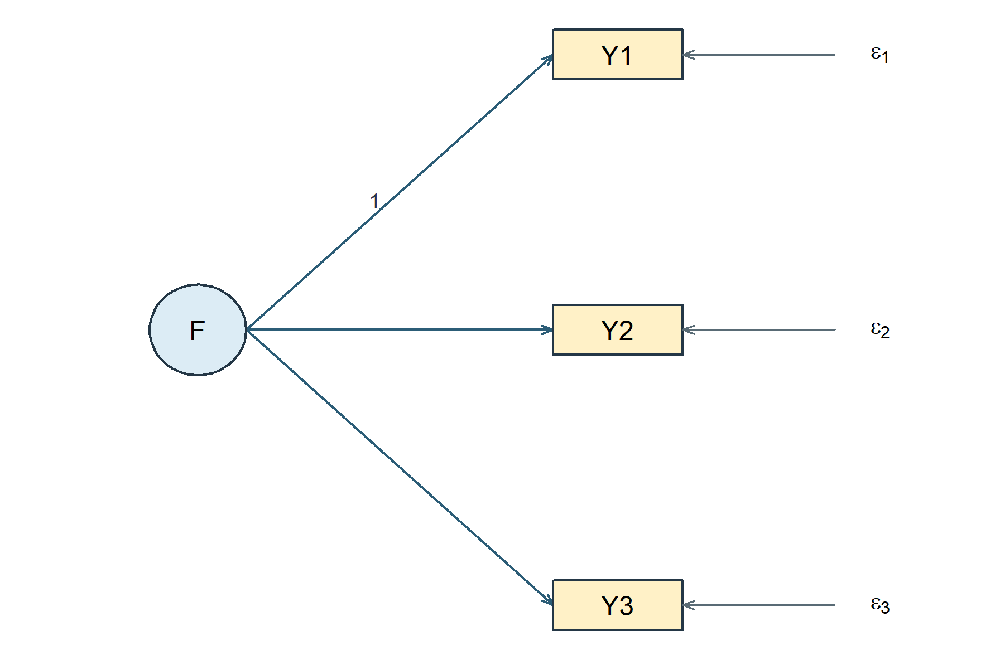
Now consider two orthogonal, isolated two-indicator factors, with unit factor variances. Each block has two free loadings and two residual variances but only three covariance moments. Across both blocks there are ten available covariance entries and eight free parameters, giving a superficially favorable \(df=2\). Yet the cross-block covariances are all fixed to zero and provide no information to separate the two loadings within either block. For one block,
\[ \sigma_{12}=\lambda_1\lambda_2, \quad \theta_{11}=\sigma_{11}-\lambda_1^2, \quad \theta_{22}=\sigma_{22}-\lambda_2^2. \]
A range of choices for \(\lambda_1\) can yield the same moments by adjusting \(\lambda_2\) and both residual variances, while retaining positive variances. The whole-model count did not reveal the local deficiency. Additional indicators or justified restrictions can help; adding an arbitrary constraint solely to make software run changes the measurement model and needs a rationale.
The diagram pair makes the missing information visible. In the isolated model, all four cross-block covariances are fixed to zero, so the positive whole-model df do not help identify either two-indicator block. Allowing a nonzero factor covariance connects the blocks: cross-block moments then contain products of loadings from both factors. The connected model has nine free parameters and nominal \(df=1\), compared with eight and nominal \(df=2\) for the isolated model. It is generically identified under regular nonzero loadings and \(\phi_{12}\ne0\); the argument degenerates when that connection is zero.
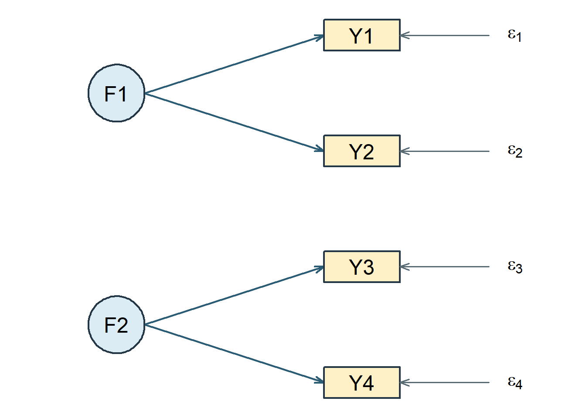
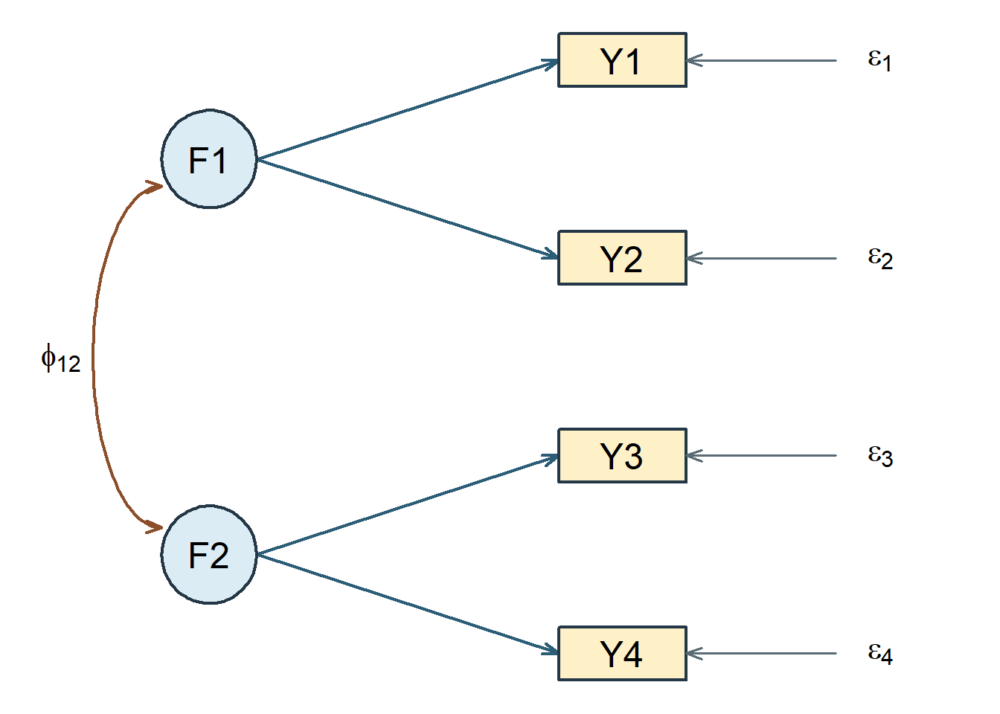
One indicator needs external measurement information. Suppose a study has one continuous score with variance 25. A centered measurement model writes \(x=\eta+\epsilon\), with loading one and \(\operatorname{Cov}(\eta,\epsilon)=0\). Its sole variance equation is \(25=\phi+\theta\). Naming the factor and fixing its loading set a metric; they do not separate the two unknown variance components. Repeating the same score would add no observed information.
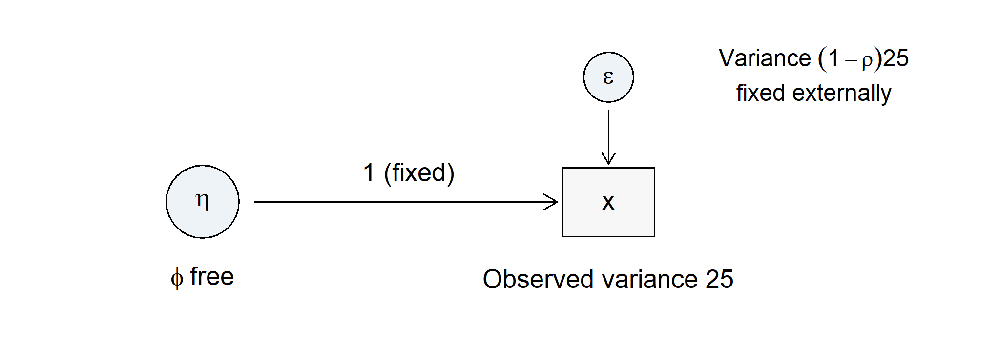
External reliability \(\rho\) means the fraction of this score’s variance attributable to \(\eta\) under that decomposition. Fixing \(\rho=.8\) fixes \(\theta=(1-.8)25=5\), leaving \(\phi=20\). One free variance now matches one observed variance; there is no remaining covariance restriction to test. The fixed error variance contributes measurement information. The fixed loading contributes the scale convention.
Predict and explain. Keep the observed variance at 25 and assume higher reliability. Which component must grow, and which must shrink? Can the unchanged reproduction of 25 decide which assumption is credible?
| Externally fixed reliability | Fixed residual variance | Recovered factor variance |
|---|---|---|
| .7 | 7.5 | 17.5 |
| .8 | 5.0 | 20.0 |
| .9 | 2.5 | 22.5 |
| 1.0 | 0.0 | 25.0 |
The higher assumed reliability allocates more variance to the factor and less to error without changing the fit to the single available moment. The error-free row is a stronger measurement assumption, not a finding from the data. These are population-moment illustrations, with no empirical sample size or sampling interval.
An external reliability study must concern the same score definition, relevant population and intended use. A borrowed value is an assumption to investigate, and an estimated reliability has its own uncertainty. The rows are an assumption-sensitivity analysis rather than a confidence interval. Fixing one estimated value in a larger model does not propagate that uncertainty. Cronbach’s alpha is not automatically a known true reliability. The resulting model can represent an error-prone single score, but the restriction still requires a measurement justification (Kline, 2013).
6.4 Restriction is what replaces rotation
It is worth being explicit about why identification becomes a live question here rather than earlier. An exploratory model is unidentified by construction: for any nonsingular \(\mathbf T\), the pair \(\boldsymbol\Lambda\mathbf T^{-1}\) and \(\mathbf T\boldsymbol\Phi\mathbf T^{\mathsf T}\) reproduces the same covariance, so a whole continuous family of loading matrices is observationally equivalent, and rotation selects one member of it by a stated criterion.
A confirmatory model does not select from that family; it removes it. Once enough loadings are fixed at zero, no nontrivial \(\mathbf T\) maps the pattern onto itself – a rotation that preserved the zeros would have to be diagonal, and the scaling convention then fixes what remains up to sign. That is the trade. Exploratory analysis buys freedom from prior commitment at the cost of never identifying its axes; confirmatory analysis buys identified parameters at the cost of having to defend every zero.
Because the zeros do the work, identification now depends on where they are, not only on how many there are. Two sufficient conditions cover most applied specifications (Bollen, 1989; Brown, 2006), and both assume a diagonal residual covariance matrix and a scale fixed for each factor:
- Three indicators per factor. A factor with at least three indicators that load on it alone is identified, whether or not it correlates with anything else. Section 6.3 did this case explicitly.
- Two indicators per factor. A factor with only two exclusive indicators is identified when it is connected to the rest of an identified measurement model: it must have a nonzero covariance with at least one other identified factor, and the parameter values must be regular, meaning that the cross-block covariances carrying the information are not themselves zero. The orthogonal counterexample above fails exactly this condition – the connecting covariances were fixed at zero, so no information reached the block.
Stated with those conditions attached, both are sufficient for generic identification; they are not necessary, and models that violate them may still be identified. The second rule is the more fragile of the two, because it depends on a quantity that is estimated rather than assumed. If the connecting correlation is genuinely zero in the population, the rule simply does not apply. If it is nonzero in the population but estimated near zero in a particular sample, the model remains identified in principle while behaving in estimation as though it were not. That is the situation the next section calls weak identification, and its symptoms are unstable estimates and enormous standard errors rather than an error message.
6.5 Structural, weak, and numerical problems
Structural nonidentification is built into the parameter mapping. Weak identification describes a formally recoverable model whose parameters are poorly distinguished in a particular configuration. Small loadings, nearly proportional loading columns, or factor correlations close to one can make very different parameter vectors produce nearly indistinguishable moments. Numerical difficulty is another issue: unsuitable starts or badly scaled variables can impede an optimizer even when a well-behaved optimum exists.
| Check | Warning | What it warrants |
|---|---|---|
| Moment count | More free parameters than moments | Reconsider specification |
| Metric and sign | No normalization or inconsistent orientation | Specify units and signs |
| Local connections | Isolated insufficient indicator block | Examine block equations |
| Loading rank | Redundant factor patterns | Examine distinct common directions |
| Factor covariance | Near singularity | Investigate weak separation |
| Residual variances | Zero or negative estimates | Inspect admissibility and misspecification |
| Information/SEs | Singular matrix or unstable large SEs | Check recoverability and numerical behavior |
| Starts and gradients | Different optima or nonzero gradient | Resolve optimization before interpretation |
A numerical derivative matrix provides a local diagnostic. If \(\mathbf s(\boldsymbol\vartheta)\) stacks the distinct implied moments, its Jacobian is \(\partial\mathbf s/\partial\boldsymbol\vartheta^{\mathsf T}\). Full column rank at a regular point supports local identification; it does not prove global uniqueness or uniform stability throughout the parameter space. Students need not derive this matrix to understand what the diagnostic adds beyond counting.
The SLE primary fit has numerical Jacobian rank 29 for 29 free parameters. That is a useful local check of the actual fitted candidate. The three blocks also have several pure primary indicators, so the two retained cross-loadings do not leave every factor’s orientation open as in unrestricted EFA.
6.6 Nested, nonnested, and equivalent models
A restricted model is nested in another if every covariance matrix it can generate belongs to the larger model’s covariance set. Show the restrictions that produce that inclusion; a parameter-count comparison alone is not enough. The base six-indicator model is nested in its cross-loading extension by setting \(\lambda_{32}=0\).
Two models can have the same df and different covariance sets, as with an alternative indicator assignment. They can also have different-looking parameters but identical covariance sets, as with the regular marker and fixed-factor reparameterizations. Observational equivalence limits what covariance data can distinguish. It does not establish that higher-order, bifactor, and correlated-residual models are generally equivalent; each such claim requires an exact mapping and conditions.
One deliberately constrained example shows what an exact mapping looks like. For two positively correlated first-order factors, fix both second-order loadings to one, set \(\operatorname{Var}(G)=\phi_{12}\), and set the two first-order disturbance variances to \(\phi_{11}-\phi_{12}\) and \(\phi_{22}-\phi_{12}\). When these variances are nonnegative, the second-order parameterization reproduces exactly the same \(2\times2\) factor covariance matrix. Without the two extra scale/equality restrictions, two first-order factors do not by themselves identify a second-order factor. Chapter 4 develops the case with three first-order factors and then a distinct bifactor structure. Those models express alternative measurement structures; they are not generic remedies for a weak initial model.
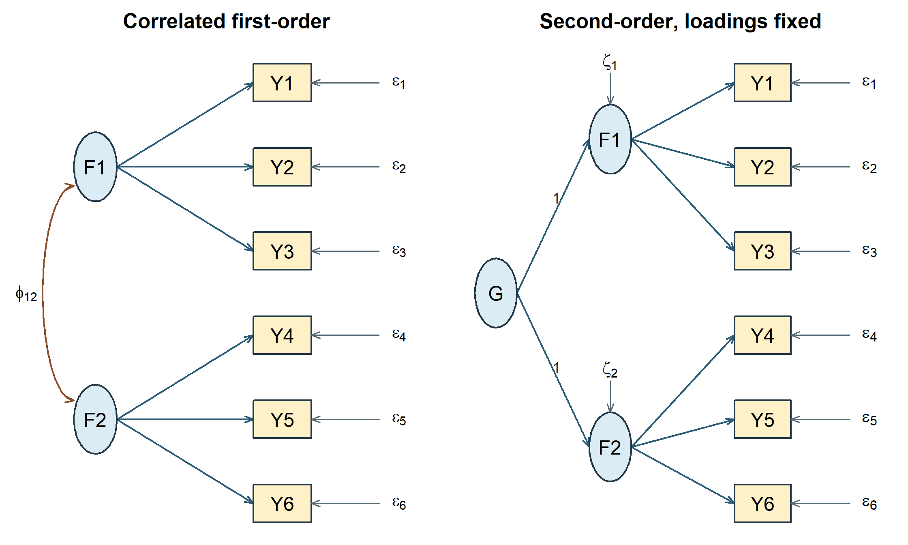
These distinctions prepare comparison. They do not yet say which candidate is adequate or which restriction the data oppose.
7 What estimation does
7.1 Minimize a stated discrepancy
Let \(\mathcal P\) be the admissible parameter space and \(\mathbf S\) the sample covariance under a declared divisor. Covariance estimation can be written
\[ \widehat{\boldsymbol\vartheta} =\arg\min_{\boldsymbol\vartheta\in\mathcal P} F\{\mathbf S,\boldsymbol\Sigma(\boldsymbol\vartheta)\}. \]
For normal-theory ML, a conventional covariance discrepancy is
\[ F_{\mathrm{ML}} =\log|\boldsymbol\Sigma(\boldsymbol\vartheta)| +\operatorname{tr}\{\mathbf S\boldsymbol\Sigma(\boldsymbol\vartheta)^{-1}\} -\log|\mathbf S|-p. \]
The determinant summarizes multivariate dispersion; the trace term compares the sample covariance to the model’s inverse-covariance weighting. The last two terms depend only on the input matrix and dimension. They normalize the discrepancy to zero when \(\boldsymbol\Sigma=\mathbf S\), because \(\operatorname{tr}(\mathbf S\mathbf S^{-1})=p\). The dimension term is the number of observed variables, not the number of indicators plus factors.
At a proper optimum, numerical changes in the free parameters cannot materially lower the objective under the specified constraints. That is an optimization statement. It does not imply small absolute discrepancy, plausible parameter meaning, or a unique substantive model.
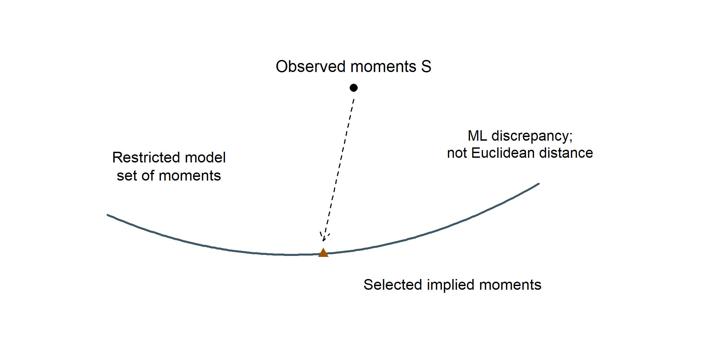
7.2 Normality belongs to the likelihood contract
The factor covariance equation follows from linearity, finite second moments, and the stated zero covariances. It does not require normality. Conventional normal-theory ML standard errors and tests additionally use sampling and distributional regularity. Where the departure is nonnormality of the observed variables under independent sampling, scaled corrections to the test statistic and standard errors are the standard remedy (Satorra & Bentler, 1994). They do not address dependence between cases, clustering, or selection, each of which needs its own treatment. Independently distributed normal factors and normal residuals give a jointly normal observed vector in this linear model. Marginally normal histograms alone do not establish multivariate normality or independent sampling.
Sample B consists of 360 complete, independently simulated continuous records. There is no silent missing-case removal, imputation, weighting, clustering adjustment, or ordinal recoding. The raw indicators retain the fixed process-index units.
The estimated model is the inherited candidate, unchanged:
\[ \boldsymbol\Lambda= \begin{bmatrix} \boldsymbol\lambda_{\mathrm P}&\mathbf 0&\mathbf 0\\ \mathbf 0&\boldsymbol\lambda_{\mathrm S}&\mathbf 0\\ \mathbf 0&\mathbf 0&\boldsymbol\lambda_{\mathrm B} \end{bmatrix} \ \text{with two entries freed}, \qquad \boldsymbol\Phi= \begin{bmatrix} 1&\phi_{12}&\phi_{13}\\ \phi_{12}&1&\phi_{23}\\ \phi_{13}&\phi_{23}&1 \end{bmatrix}. \]
Here \(\boldsymbol\Lambda\) is \(12\times3\), with \(\boldsymbol\lambda_{\mathrm P}\), \(\boldsymbol\lambda_{\mathrm S}\) and \(\boldsymbol\lambda_{\mathrm B}\) each \(4\times1\) and free. The two freed entries are P4 on Strategy, in the fourth row of the second column, and S4 on Belonging, in the eighth row of the third column. Fourteen of the thirty-six loading slots are therefore free and twenty-two are fixed at zero; \(\boldsymbol\Theta\) is diagonal of order twelve; and the Planning coefficients of P1 and P2 are the two named for the planned equality of Section 8.5.
The estimation settings are stated rather than inherited: normal-theory maximum likelihood on the raw records, the normal likelihood scaling of the covariance discrepancy, unit factor variances rather than marker loadings, no mean structure, listwise deletion of incomplete cases, conventional standard errors and a conventional test statistic, and expected information for both. Section 7.3 records the divisor the normal scaling implies.
Sample B is the confirmation record in the released sle_continuous.csv; the exploratory chapter’s data appendix gives the codebook and sample manifest. Before fitting, the chapter source checks the released file against the declared population: the column names and order, the row count for each sample, the case identifiers, and every indicator value. Numerically coded columns alone are not sufficient evidence of a continuous measurement scale.
Categorical indicators are covered elsewhere. Categorical group labels and dummy predictors remain available for later multigroup and MIMIC models. Later SEM chapters address robust ML inference for nonnormality and FIML for missing continuous data under suitable assumptions; neither is a categorical-measurement switch.
7.3 Record the covariance divisor
The normal-likelihood convention uses
\[ \mathbf S_N=\frac1N\sum_{i=1}^N (\mathbf y_i-\bar{\mathbf y})(\mathbf y_i-\bar{\mathbf y})^{\mathsf T} =\frac{N-1}{N}\mathbf S_{N-1}. \]
R’s cov() uses \(N-1\); lavaan performs the normal-likelihood rescaling internally. Do not pre-rescale raw observations to compensate. When working from a covariance matrix rather than raw data, disclose the supplied divisor and package rescaling options. The estimator documentation distinguishes the normal and Wishart conventions explicitly.
For the normal convention, the model statistic uses \(N\) times the covariance discrepancy. The Wishart convention uses an \(N-1\) covariance and multiplier. Chapter 2’s corrected exploratory statistic is a further distinct finite-sample convention. This chapter records the normal family without interpreting its model test.
7.4 A small mean-structure comparison
The fixed M1-cross has 78 covariance moments, 29 free covariance parameters, and 49 df. Adding twelve free indicator intercepts while keeping latent intercepts zero gives 90 moments, 41 free parameters, and the same 49 df. For the stricter M0-simple model the corresponding counts are 78/27/51 and 90/39/51.
| Model | Moments | Free | Df |
|---|---|---|---|
| M1 covariance | 78 | 29 | 49 |
| M1 free intercepts | 90 | 41 | 49 |
| M0 free intercepts | 90 | 39 | 51 |
The largest difference between the M1 covariance-only and free-intercept implied covariance matrices is 0e+00. The estimated free intercepts reproduce the sample means. This verifies the intended separation of covariance restrictions from an unrestricted mean extension. It does not justify freely estimating latent origins without additional constraints.
8 Read estimates and evaluate the model
8.1 Convergence and admissibility first
Convergence, admissibility, gradients, and local rank are checked before any coefficient or fit index is read. These numerical checks establish that the solution can be interpreted; global and local evaluation follow in Section 8.8.
The optimizer reports convergence for the inherited M1-cross model, with no captured fitting warnings. The maximum absolute gradient is 3.5e-07. All residual variances are positive, the factor covariance and implied covariance matrices are positive definite, and standard errors are available. The smallest information-matrix eigenvalue is positive, although its magnitude depends on parameter scaling and is not a universal quality index.
| Check | Passed |
|---|---|
| Converged | TRUE |
| No warnings | TRUE |
| Positive residual variances | TRUE |
| Positive factor covariance | TRUE |
| Positive implied covariance | TRUE |
If convergence fails, first inspect the stated model, data, scale, and starting values. If convergence succeeds but a variance is negative, the solution is improper for this model. Do not proceed directly to fit-index interpretation or replace the negative value by zero in a report. If an admissible fit has large standard errors or near-perfect factor correlations, examine weak separation and sensitivity. Different warnings imply different investigations.
These checks are reproducible from lavInspect() and the parameter table. They are diagnostics at the fitted point; they do not substitute for the earlier structural identification reasoning.
8.2 Read loadings in their stated units
| Factor | Item | Raw | SE | Lower | Upper | Std.all |
|---|---|---|---|---|---|---|
| Planning | P1 | 6.304 | 0.407 | 5.507 | 7.102 | 0.770 |
| Planning | P2 | 7.810 | 0.520 | 6.791 | 8.830 | 0.751 |
| Planning | P3 | 8.407 | 0.629 | 7.174 | 9.640 | 0.684 |
| Planning | P4 | 4.734 | 0.472 | 3.809 | 5.658 | 0.519 |
| Strategy | S1 | 7.524 | 0.494 | 6.556 | 8.493 | 0.751 |
| Strategy | S2 | 6.114 | 0.422 | 5.287 | 6.940 | 0.724 |
| Strategy | S3 | 7.860 | 0.579 | 6.725 | 8.996 | 0.687 |
| Strategy | S4 | 5.438 | 0.424 | 4.607 | 6.270 | 0.622 |
| Strategy | P4 | 3.288 | 0.460 | 2.387 | 4.190 | 0.361 |
| Belonging | B1 | 8.619 | 0.450 | 7.737 | 9.502 | 0.888 |
| Belonging | B2 | 9.210 | 0.565 | 8.102 | 10.317 | 0.784 |
| Belonging | B3 | 4.925 | 0.407 | 4.127 | 5.723 | 0.616 |
| Belonging | B4 | 4.695 | 0.554 | 3.608 | 5.781 | 0.453 |
| Belonging | S4 | 2.569 | 0.398 | 1.790 | 3.348 | 0.294 |
For P1, a one-standard-deviation increase in Planning corresponds to an estimated 6.304 process-index-point change through the specified loading relation. Its standard error is 0.407, and its 95% interval runs from 5.507 to 7.102. The fully standardized loading, 0.77, expresses the same relation relative to P1’s model-implied standard deviation. Neither magnitude is a causal effect established by this analysis.
P4 and S4 each have two rows because two loadings were fixed as free before Sample B was inspected. In this restricted CFA, the secondary coefficients are estimated jointly with all other free parameters. They need not equal the rotated EFA coefficients from another sample, another matrix metric, and a less restricted loading model.
The signs and intervals support reading these as positive conditional relations within the specified model. They do not license removing other restrictions without evaluation. A precise coefficient can be estimated inside a model whose broader covariance representation is inadequate.
8.3 Standard errors, intervals, and tests
For a regular interior parameter with null value \(\vartheta_0\),
\[ z=\frac{\widehat\vartheta-\vartheta_0} {\operatorname{SE}(\widehat\vartheta)}, \qquad \widehat\vartheta\ \pm\ 1.96\operatorname{SE}(\widehat\vartheta) \]
give a conventional asymptotic test and 95% interval under the stated ML assumptions. The interval concerns repeated-sample coverage of a population parameter under that model. It is not a range containing 95% of individual factor scores or item responses.
Normal approximations deserve particular caution for boundary variances, strongly asymmetric sampling distributions, weak identification, and misspecified distributional assumptions. A fixed parameter has no sampling standard error as a freely estimated quantity: its printed value of one or zero is a specification, not a highly precise discovery. Software may print zero SE and omit its \(z\) test for that reason.
Statistical significance also differs from measurement importance. A small loading can be precisely estimated in a large sample; a content-essential loading may be uncertain in a small sample. Deleting items solely because \(p>.05\) changes the model and the content represented. That decision needs more than a significance column.
8.4 Factor relations and residual variance
| Factor1 | Factor2 | Correlation | SE | Lower | Upper |
|---|---|---|---|---|---|
| Planning | Strategy | 0.406 | 0.058 | 0.292 | 0.519 |
| Planning | Belonging | 0.289 | 0.059 | 0.174 | 0.405 |
| Strategy | Belonging | 0.289 | 0.060 | 0.171 | 0.407 |
All three correlations are positive and distinct from one in the reported point solution. A correlation is not the percentage of one factor caused by another. It also does not measure the reliability of either factor. Later structural models place restrictions on these associations; measurement estimation alone does not select their direction.
For a single-loading item, the standardized residual variance is \(\theta_{jj}/\sigma_{jj}\) and the common proportion is its complement. For a cross-loading item,
\[ h_j^2=\frac{\boldsymbol\lambda_j^{\mathsf T} \boldsymbol\Phi\boldsymbol\lambda_j}{\sigma_{jj}}. \]
The numerator includes cross-products involving factor correlations. It is not generally the sum of two squared standardized coefficients. Residual variance can include specific stable influences and random measurement error; the factor model does not automatically separate those components.
8.5 A planned equality test
M3-equal was named in Chapter 2: it constrains the raw Planning loadings of P1 and P2 to equality. Let \(\mathbf R\boldsymbol\vartheta=\mathbf r\) represent \(q\) independent linear restrictions. The Wald statistic is
\[ W=(\mathbf R\widehat{\boldsymbol\vartheta}-\mathbf r)^{\mathsf T} \left[\mathbf R\widehat{\operatorname{Var}} (\widehat{\boldsymbol\vartheta})\mathbf R^{\mathsf T}\right]^{-1} (\mathbf R\widehat{\boldsymbol\vartheta}-\mathbf r). \]
Under suitable regularity, its reference is \(\chi_q^2\). For one loading difference, the estimated variance is
\[ \operatorname{Var}(\widehat\lambda_{\mathrm{P1}} -\widehat\lambda_{\mathrm{P2}}) =\operatorname{Var}(\widehat\lambda_{\mathrm{P1}}) +\operatorname{Var}(\widehat\lambda_{\mathrm{P2}}) -2\operatorname{Cov}(\widehat\lambda_{\mathrm{P1}}, \widehat\lambda_{\mathrm{P2}}). \]
Ignoring the covariance between estimates can give the wrong test. With the free parameters in the order the fitted model reports them, the planned restriction is the single row
\[ \mathbf R=(\,1,\;-1,\;0,\ldots,0\,), \qquad \mathbf r=0,\qquad q=1, \]
the \(1\) and \(-1\) standing in the positions of the two named Planning coefficients, so those two are the only parameters the test touches. The equality can also be imposed and the restricted model refitted; that supplies a likelihood-ratio view of the same substantive restriction.
Here \(W=\) 6.911 on one df, with \(p\) = 0.009. Under the declared model and normal approximation, the data oppose this particular raw-loading equality. This is not a test that M1 is globally adequate, nor a test of equality of fully standardized loadings. The Wald perspective is one of three views of the same restriction; the restricted-model and likelihood-ratio views belong with model comparison.
8.6 Carry the exact candidate, not an assumed baseline
The inherited model has twelve indicators, three correlated factors, and two additional loadings. Its fixed-factor covariance ledger is
\[ u=78,\qquad t=14\text{ loadings}+12\text{ residual variances} +3\text{ factor correlations}=29,\qquad df=49. \]
The simpler 27-parameter, 51-df model remains M0-simple, a named rival. It is not silently substituted for the inherited model. The all-item one-factor rival, the orthogonal restriction, and the raw-loading equality retain their Chapter 2 definitions. Models keep their M0–M4 identifiers across the three chapters; the separate example models use D1–D4, and a later data-developed revision will use an R identifier.
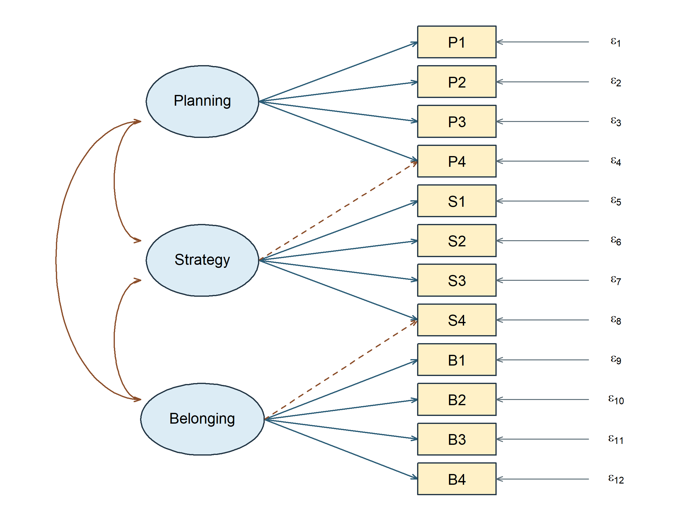
8.7 Save what another analyst needs
| Record component | What the reproducible record carries |
|---|---|
| Evidence identity | Sample B role, 360 rows, item order and case identifiers |
| Measurement specification | Fixed syntax, active item list, factors and all rivals |
| Parameter conventions | Unit factor variances, zero latent location, covariance-only model |
| Estimation | ML, normal likelihood, expected-information standard errors |
| Data handling | Complete continuous raw observations; no weights or clustering |
| Numerical status | Convergence, warnings, gradients, admissibility, local rank |
| Parameter output | Full free/fixed ledger, estimates, SEs, intervals, standardizations |
| Fitted moments | Observed \(\mathbf S_N\) and exact model-implied covariance |
| Evaluation fields | Conventional test, df, RMSEA/interval, CFI/TLI, SRMR, log likelihood, AIC/BIC |
| Reproduction | R and package versions, and the model syntax |
Keep full-precision fitted results with the model declarations and analysis settings. Rounded tables make the study readable, but reconstructing a covariance matrix from those rounded coefficients can introduce avoidable differences. Another analyst should be able to refit the same observations under the same specification and recover the results within numerical tolerance. Later comparisons must preserve this analysis identity while making each changed restriction explicit.
The numerical marker/fixed-factor comparison also succeeds for both records. For the SLE fit, the largest absolute difference in implied covariance is 1.4e-04; for the six-indicator example fit it is 2.5e-06. The small numerical tolerances reflect separate optimization, not a theoretical discrepancy between valid scale choices.
The record preserves both results and their conditions of interpretation. The following basic evaluation belongs to that record; it neither selects a revised model nor spends the independent validation sample.
8.8 Complete a basic global and local evaluation
An estimate says which member of the specified model family best reproduces the records under the chosen discrepancy. Evaluation asks how that member relates to the observations and to the population claim. Start with the exact-fit hypothesis: some admissible parameter vector reproduces the population covariance,
\[ H_0:\ \boldsymbol\Sigma(\boldsymbol\vartheta)=\boldsymbol\Sigma_0. \]
Under independent, jointly Normal observations and suitable identification and regularity conditions, \(T=N\widehat F_{\mathrm{ML}}\) has an asymptotic chi-square reference with \(df=u-t\). The tail probability describes evidence against this exact restriction. A large value can oppose exact fit without showing where the discrepancy lies or whether it is consequential for the intended use. Nonrejection indicates compatibility at the available precision; it does not accept the measurement model as true.
The rest of the basic profile addresses related questions. RMSEA estimates discrepancy per degree of freedom, truncating negative estimates of the underlying noncentrality at zero. Its 90% interval reminds us that the point estimate is uncertain. CFI and TLI compare the model with a declared baseline, usually one that retains indicator variances while setting their covariances to zero. SRMR summarizes observed-minus-implied covariance residuals after scaling by observed indicator standard deviations. These measures do not supply interchangeable verdicts.
| Evidence | Question it addresses | Limit of the answer |
|---|---|---|
| Chi-square test and \(p\) value | Are the exact population moment restrictions opposed? | Sensitive to sample size; does not locate or measure substantive importance |
| RMSEA and 90% interval | How large is estimated discrepancy per df, with what uncertainty? | Depends on model size and df; zero can arise from truncation |
| CFI and TLI | How much does the target improve over its baseline? | A poor baseline can make improvement look impressive |
| SRMR | How large are scaled covariance residuals on average? | Many small cells can conceal a few consequential discrepancies |
| Model | Chi square | df | p | RMSEA | CI 90 | CFI | TLI | SRMR |
|---|---|---|---|---|---|---|---|---|
| Simulation | 8.469 | 7 | 0.293 | 0.02 | [0, 0.061] | 0.999 | 0.998 | 0.016 |
| Questionnaire | 48.475 | 49 | 0.494 | 0.00 | [0, 0.034] | 1.000 | 1.000 | 0.032 |
For the correctly specified simulated model, \(T=8.469\) on 7 df gives \(p=.293\). The result is compatible with the generating structure, but the sample has not recovered population values without error. For example, the second loading of \(Y_3\) was generated as .25; under the same marker metric its estimate is 0.232. The population/sample/fitted panels in Figure 3 now have separate roles: known truth for the simulation, realized evidence, and the model’s best-fitting reproduction.
The questionnaire’s fixed candidate has a favorable global profile. Its zero RMSEA is a truncation, not an assertion that all residuals are zero. Its TLI is slightly above one before reporting precision; an incremental index need not be a proportion bounded by one. Neither fact licenses a universal acceptance rule. We still need to inspect where the covariance reproduction succeeds or strains.
Define a covariance residual and its observed-SD-scaled form by
\[ e_{jk}=S_{N,jk}-\widehat\Sigma_{jk}, \qquad e^{(s)}_{jk}=\frac{e_{jk}}{\sqrt{S_{N,jj}S_{N,kk}}}. \]
The sign is informative: a positive entry means that the model reproduces less association than the sample contains. A raw residual uses the product of the indicators’ units; the scaled value facilitates comparison across pairs. It is neither an estimated residual-covariance parameter in \(\boldsymbol\Theta\) nor a discrepancy divided by its sampling standard error. Calling it a \(z\) statistic would attach an unsupported reference distribution.
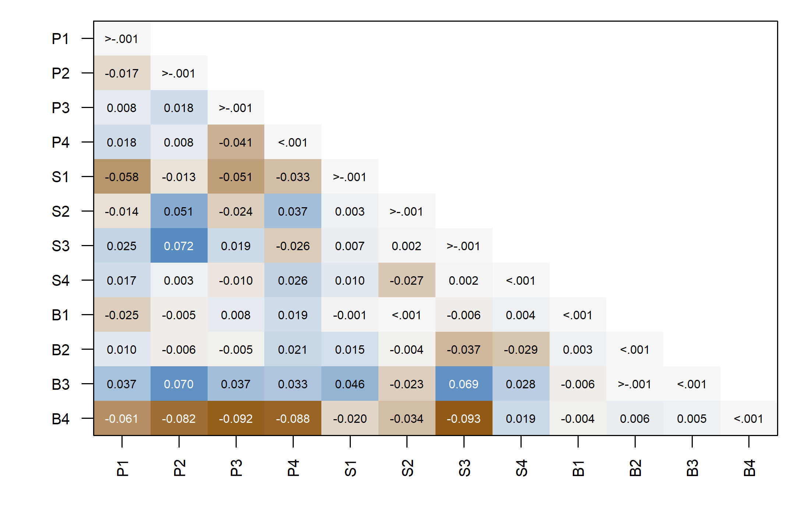
For B4 and S3, the observed covariance is \(-.371\) and the fitted covariance is \(10.66\), giving a raw residual of \(-11.031\) and a scaled residual of \(-.093\). The model over-reproduces this particular cross-domain association. That localized discrepancy can coexist with SRMR .032 and a nonrejected exact-fit test. It raises a question about the representation without uniquely identifying a cause or justifying a new path. Selecting and testing a revision requires an explicit account of how the change was chosen and what fresh evidence can assess it.
8.9 An empirical model from raw and summary information
The previous simulation tells us the generating structure because we supplied it. Historical measurements do not offer that privilege. Holzinger and Swineford’s ability-test records, distributed with the lavaan package, provide 301 pupils from the Pasteur and Grant-White schools. The documented nine-test example uses three proposed domains: visual, textual and speed. The records come from seventh- and eighth-grade pupils; we pool the two schools for this illustration. Pooling is an analysis decision, not evidence that the measurement relations are invariant across schools.
| Proposed domain | Indicators in this analysis |
|---|---|
| Visual | x1 visual perception; x2 cubes; x3 lozenges |
| Textual | x4 paragraph comprehension; x5 sentence completion; x6 word meaning |
| Speed | x7 speeded addition; x8 counting dots; x9 straight-curved capitals |
Fit one correlated three-factor model with each indicator loading on its assigned factor only. Set factor variances to one, free the three factor covariances and nine residual variances, and set residual covariances to zero. All nine selected scores are observed for all 301 pupils. Keep the normal-theory ML convention, expected-information standard errors and covariance-only model. The ledger is \(9(10)/2=45\) distinct moments minus \(9+9+3=21\) free parameters, giving 24 df.
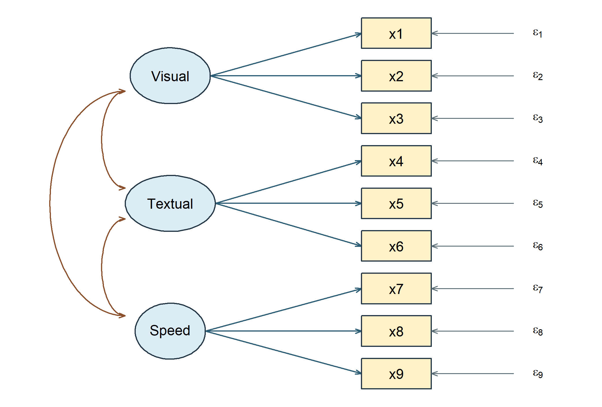
| Domain | Indicator | Estimate | SE | Lower | Upper | Standardized |
|---|---|---|---|---|---|---|
| Visual | x1 | 0.900 | 0.081 | 0.741 | 1.058 | 0.772 |
| Textual | x4 | 0.990 | 0.057 | 0.879 | 1.101 | 0.852 |
| Speed | x7 | 0.619 | 0.070 | 0.483 | 0.756 | 0.570 |
A visual-factor increase of one model SD corresponds to an expected x1 increase of .9 test-score units, with a 95% interval [.741, 1.058]. This conditional measurement relation does not mean that manipulating an unobserved ability would necessarily change the test score by that amount. Before treating any loading as a satisfactory measurement relation, consider the model that makes its interpretation possible.
| Model | Chi square | df | p | RMSEA | CI 90 | CFI | TLI | SRMR |
|---|---|---|---|---|---|---|---|---|
| Raw | 85.306 | 24 | < .001 | 0.092 | [0.071, 0.114] | 0.931 | 0.896 | 0.065 |
| Summary | 85.306 | 24 | < .001 | 0.092 | [0.071, 0.114] | 0.931 | 0.896 | 0.065 |
The exact-fit test rejects at \(p<.001\): \(T=85.306\) on 24 df. RMSEA .092 has 90% interval [.071, .114], CFI is .931, TLI .896 and SRMR .065. The model summarizes substantial association, but its exact restrictions are opposed and its local discrepancies merit attention. The x7–x8 raw covariance residual is .082 and its observed-SD-scaled value is .075. A clear loading estimate and an imperfect covariance representation can occur together; neither finding should erase the other. This section evaluates the declared model without searching for a better-fitting replacement.
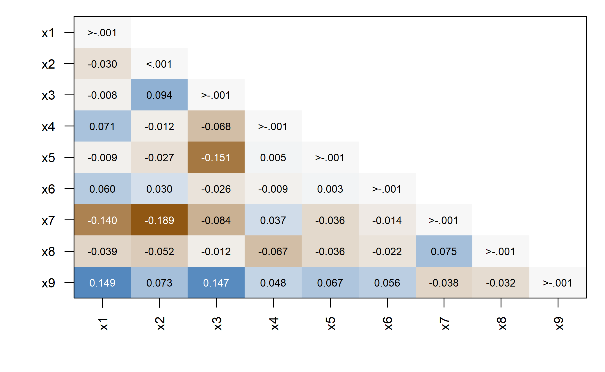
The .075 entry is one location in this pattern, not the largest residual or a decision threshold. Its positive sign says that the model leaves part of the association between speeded addition and counting dots unexplained. The whole pattern helps locate strain; substantive knowledge is needed to choose among explanations.
The second row uses the lower-triangle covariance matrix in Table 17 and \(N=301\). The matrix is derived from these same raw records, using divisor \(N-1\). It is not transcribed from a published summary table or offered as an independent replication. Variable order, test-score units, sample size and divisor are part of the input.
| x1 | x2 | x3 | x4 | x5 | x6 | x7 | x8 | x9 | |
|---|---|---|---|---|---|---|---|---|---|
| x1 | 1.363 | ||||||||
| x2 | 0.409 | 1.386 | |||||||
| x3 | 0.582 | 0.453 | 1.279 | ||||||
| x4 | 0.507 | 0.210 | 0.209 | 1.355 | |||||
| x5 | 0.442 | 0.212 | 0.113 | 1.101 | 1.665 | ||||
| x6 | 0.456 | 0.248 | 0.245 | 0.899 | 1.018 | 1.200 | |||
| x7 | 0.085 | -0.097 | 0.089 | 0.220 | 0.143 | 0.145 | 1.187 | ||
| x8 | 0.265 | 0.110 | 0.213 | 0.126 | 0.181 | 0.166 | 0.537 | 1.025 | |
| x9 | 0.460 | 0.245 | 0.375 | 0.244 | 0.296 | 0.237 | 0.375 | 0.459 | 1.018 |
Normal ML rescales this unbiased covariance once to divisor \(N\). With the same restrictions and conventions, the raw and summary fits agree in coefficients, conventional standard errors, fitted covariance, log likelihood and test statistic within \(10^{-7}\). The largest fitted-covariance difference here is 0e+00. Refitting the rounded display matrix would be a different numerical input, so it need not reproduce these numbers to that tolerance. The models shown have no mean structure; a model for intercepts would additionally require sample means.
| Information supplied | Analyses it supports here | Information still absent |
|---|---|---|
| Covariance, \(N\), order, units and divisor | Normal-theory covariance-model estimates, conventional uncertainty and fit | Which pupils contributed particular score patterns |
| Individual records | The same fit, case inspection, individual factor-score prediction and case bootstrap | Design-based justification of causal measurement claims |
The three-factor form is a familiar teaching model, not a newly preregistered discovery in these records. Reusing the dataset therefore supplies an empirical illustration rather than fresh independent confirmation. This boundary differs from the published four-factor diagram in Section 2.5, which supplied topology only and no fitted empirical evidence, and from the simulation, whose truth was known by construction.
9 Summary and reading bridge
Five equations organize the chapter: the scalar measurement equation, the covariance decomposition, the scale transformation, the parameter-to-moment identification mapping, and the discrepancy minimization. Together they distinguish a proposed structure from a recoverable parameterization and a successful numerical estimate.
A disciplined specification check asks whether words, equations, matrices, diagram, and syntax describe the same model. A parameter check then separates free entries, scale normalizations, substantive zeros, equalities, and derived quantities. The count of distinct moments minus free parameters is essential but does not replace local-block or identification reasoning. Mean models need location conventions as well as factor scales.
The Sample B candidate passes the stated estimation and admissibility checks. Its parameters can be read with explicit units and conventional uncertainty. Their interpretation is then examined against the global profile and local covariance residuals. An identified, converged, admissible estimate is necessary for ordinary interpretation; the evaluation adds evidence about observed implications, not a certificate of measurement validity. The historical-test example completes this route from both raw and derived-summary inputs under the same assumptions.
The technical route follows the CFA specification tradition developed in Jöreskog (1969), Bollen (1989), and Brown (2006). For software details, the parameter-syntax tutorial and output-extraction guide help connect restrictions and fitted-object components. What follows develops the calibration of fit measures, compares planned rivals, and examines the conditions under which a revision needs new evidence.
Exercises
- Represent a model. Write the six-indicator base model in equations, matrices, and a path diagram. Use a free/fixed parameter ledger to identify its four free non-marker loadings, two marker constraints, six target zeros, and residual assumptions. Explain why no drawn arrow is causal proof.
- Trace a changed relation. Using the controlled parameter values in Section 4, compute \(\sigma_{16}\) and \(\sigma_{36}\). Add \(\lambda_{32}=.25\) and recompute the affected moments. Contrast adding \(\theta_{23}=.5\) instead.
- Transform the metric. For marker-scale factor variances 9 and 4, covariance 1.8, and target loadings \((1,.7,1.1)\) and \((1,.8,1.2)\), obtain the fixed-factor loading matrix and factor correlation. Verify a within-factor and a between-factor covariance before and after transformation.
- Count carefully. Evaluate the six-indicator base, its one-cross-loading extension, and its loading-equality restriction. Reconstruct the four-factor, sixteen-indicator count \(136-(16+16+6)=98\). Then derive \(78/(27+k)/(51-k)\) for twelve indicators and \(k\) extra free cross-loadings under the stated simple-structure assumptions.
- Count is not identification. Construct two distinct admissible loading/residual-variance parameter vectors for a two-indicator unit-variance factor with \(\sigma_{11}=\sigma_{22}=1\) and \(\sigma_{12}=.4\). Explain how an isolated copy of this block can remain unidentified inside a positive-df whole model. Then use the single-indicator sensitivity table to explain why fixing the loading alone is insufficient. Predict how the recovered latent variance changes when the externally fixed reliability rises from .7 to .9, and explain why unchanged reproduction of the observed variance cannot select the reliability assumption.
- Read uncertainty. From the Sample B loading table, interpret P3’s raw coefficient, SE, interval, and fully standardized coefficient. Explain why its raw coefficient above one is not an improper solution and why the printed raw SE is not the fully standardized SE.
-
Examine the contract. An analyst feeds R’s
cov()matrix into another program, leaves its divisor unspecified, fixes marker loadings to one, and compares its test directly with this chapter’s raw-data fit. List the settings and invariances that must be checked before interpreting a numerical difference. - Test a restriction. Explain the P1/P2 raw-loading equality, write its \(\mathbf R\) row, and identify the covariance term required for the variance of the estimated difference. Why does this test not decide global fit or full parallel measurement? The same fitted model has \(T=48.475\) on 49 df, \(p=.494\), and a B4–S3 observed-SD-scaled covariance residual of \(-.093\). Explain how those results can coexist with the targeted equality test, and identify what remains unestablished about the measurement claim.
Appendix: Structured means and parcels
Latent location is not identified by naming a factor
The mean equation \(\boldsymbol\mu=\boldsymbol\nu+ \boldsymbol\Lambda\boldsymbol\alpha\) contains both indicator intercepts and latent intercepts. In a single group, zero latent intercepts with free indicator intercepts are a convenient reference convention. In multigroup work, some intercept restrictions can anchor latent mean differences, but those restrictions carry measurement content. A numerical origin does not arise from labeling one group “control” or one factor “ability.” Later invariance chapters develop the required scale and location links.
The covariance-only model is unaffected by translating every observed column by a constant. A structured-mean model need not be. Similarly, rescaling a factor requires transforming its loadings, covariance, and latent intercept; rescaling an observed variable requires transforming its intercept and residual variance as well. An equality imposed after only some of these transformations can silently change the hypothesis.
Parceling changes the observed system
Combining items into parcels before fitting is common and contested; the trade-offs are set out in Little et al. (2002). The algebra below shows why the choice is not cosmetic. Let a vector of parcel scores be \(\mathbf z=\mathbf A\mathbf y\), where rows of \(\mathbf A\) specify item averages or sums. Then
\[ E(\mathbf z)=\mathbf A\boldsymbol\mu, \qquad \operatorname{Var}(\mathbf z) =\mathbf A\boldsymbol\Sigma\mathbf A^{\mathsf T}. \]
If \(\mathbf A\) reduces dimension, several different item-level covariance patterns can yield the same parcel covariance. Opposing secondary loadings or local dependencies may partly cancel within averages. A well-fitting parcel model therefore does not establish that the item-level restrictions would fit, and its AIC/BIC is not directly comparable to an item-level model with different outcomes.
Parceling can be useful under a justified measurement design, but it is not a generic normality repair or a route around identification and dimensionality questions. Evaluate item structure and preserve the meaning of the resulting score before changing the observed system. No parcels are used in the SLE course record.
References
Bollen, K. A. (1989). Structural equations with latent variables. Wiley.
Brown, T. A. (2006). Confirmatory factor analysis for applied research. Guilford Press.
Chou, H.-L., & Chou, C. (2021). A multigroup analysis of factors underlying teachers’ technostress and their continuance intention toward online teaching. Computers & Education, 175, 104335. https://doi.org/10.1016/j.compedu.2021.104335
Jöreskog, K. G. (1969). A general approach to confirmatory maximum likelihood factor analysis. Psychometrika, 34, 183–202. https://doi.org/10.1007/BF02289343
Kline, R. B. (2013). Reverse arrow dynamics: Feedback loops and formative measurement. In G. R. Hancock & R. O. Mueller (Eds.), Structural equation modeling: A second course (2nd ed., pp. 41–79). Information Age Publishing.
Little, T. D., Cunningham, W. A., Shahar, G., & Widaman, K. F. (2002). To parcel or not to parcel: Exploring the question, weighing the merits. Structural Equation Modeling, 9(2), 151–173. https://doi.org/10.1207/S15328007SEM0902_1
Satorra, A., & Bentler, P. M. (1994). Corrections to test statistics and standard errors in covariance structure analysis. In A. von Eye & C. C. Clogg (Eds.), Latent variables analysis: Applications for developmental research (pp. 399–419). Sage.